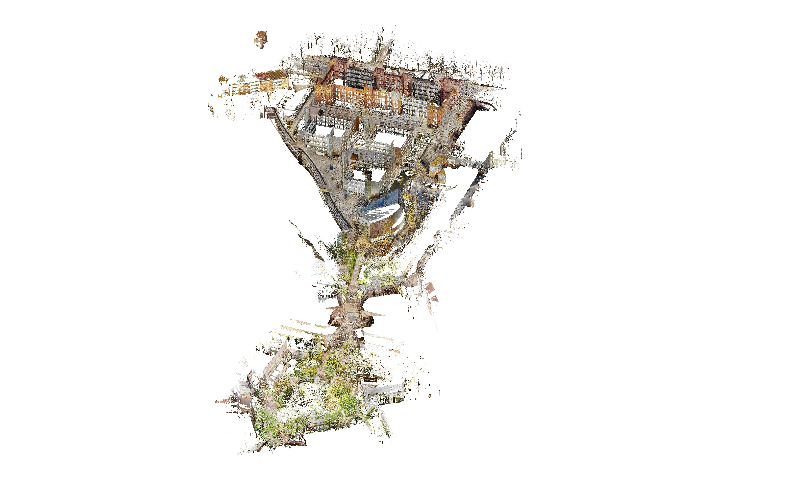
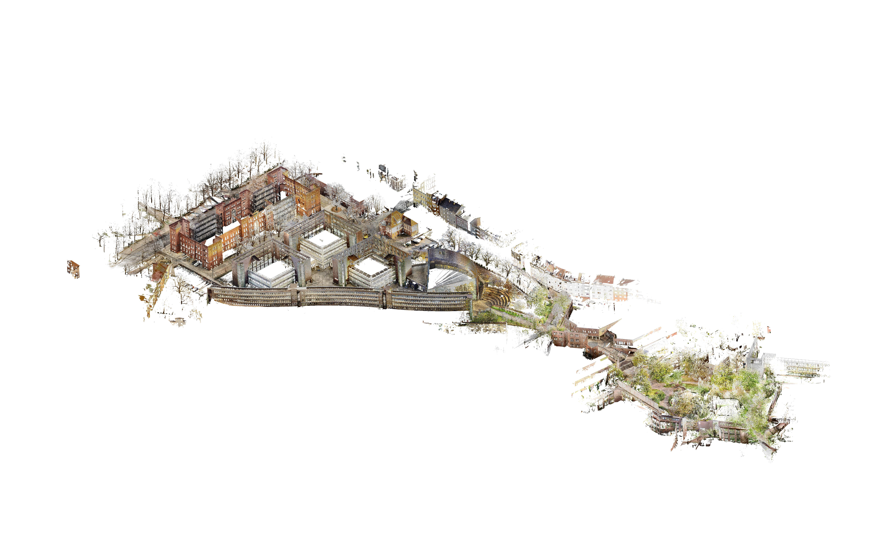

About MRCD
Our dataset was recorded in ROS2 Humble. We recorded a total of 8 sequences in a campus environment. The dataset features a variety of challenging outdoor sequences for outdoor mobile robots. All sequences can be downloaded from the Download page.
Hardware Specifications
- Four-wheeld robot platform Clearpath Jackal UGV
- Forward-facing camera Zed2 Stereo Camera
- Top LiDAR Velodyne VLP-16 LiDAR
- Ground-facing camera Intel Realsense D435
- Top RTK-GNSS Module Emlid Reach M2
Available Topics
| Topic Name | Type | Frequency (Hz) |
|---|---|---|
| /ground_truth | nav_msgs/msg/Path | 30 |
| /platform/dynamic-joint_states | control_msgs/msg/DynamicJointState | 50 |
| /platform/joint_states | sensor_msgs/msg/JointState | 50 |
| /platform/odom | nav_msgs/msg/Odometry | 50 |
| /platform/odom/filtered | nav_msgs/msg/Odometry | 50 |
| /cmd_vel_teleop | geometry_msgs/msg/Twist | 20 |
| /teleop/joy | sensor_msg/Joy | 180 |
| /tf | tf2_msgs/msg/TFMessage | 228 |
| /tf_static | tf2_msgs/msg/TFMessage | 0.001 |
| /scan | sensor_msg/LaserScan | 10 |
| /velodyne_points | sensor_msgs/msg/PointCloud2 | 10 |
| /velodyne_packets | velodyne_msgs/msg/VelodyneScan | 10 |
| /rs_front/rs_front/aligned_depth_to_color/camera_info | sensor_msgs/msg/CameraInfo | 15 |
| /rs_front/rs_front/aligned_depth_to_color/image_raw | sensor_msgs/msg/Image | 15 |
| /rs_front/rs_front/color/camera_info | sensor_msgs/msg/Image | 30 |
| /rs_front/rs_front/color/image_raw | sensor_msgs/msg/Image | 30 |
| rs_front/rs_front/color/metadata | realsense2_camera_msgs/msg/Metadata | 30 |
| /rs_front/rs_front/depth/camera_info | sensor_msgs/msg/CameraInfo | 15 |
| /rs_front/rs_front/depth/color/points | sensor_msgs/msg/PointCloud2 | 15 |
| /rs_front/rs_front/depth/image_rect_raw | sensor_msgs/msg/Image | 15 |
| /rtk_gnss/tcpfix | sensor_msgs/msg/NavSatFix | 5 |
| /rtk_gnss/tcpvel | sensor_msgs/msg/TwistStamped | 5 |
| /zed_node/imu/data_raw | sensor_msgs/msg/Imu | 200 |
| /zed_node/imu/mag | sensor_msgs/msg/MagneticField | 50 |
| /zed_node/left_raw/camera_info | sensor_msgs/msg/ CameraInfo | 30 |
| /zed_node/left_raw/image_raw_color | sensor_msgs/msg/Image | 30 |
| /zed_node/right_raw/camera_info | sensor_msgs/msg/ CameraInfo | 30 |
| /zed_node/right_raw/image_raw_color | sensor_msgs/msg/Image | 30 |
| /zed_node/odom | nav_msgs/msg/Odometry | 30 |
| /zed_node/path_map | nav_msgs/msg/Path | 2 |
| /zed_node/path_odom | nav_msgs/msg/path | 2 |
| /zed_node/point_cloud/cloud_registered | sensor_msgs/msg/PointCloud2 | 10 |
| /zed_node/pose | geometry_msgs/msg/PoseStamped | 30 |
| /zed_node/pose_with_covariance | geometry_msgs/msg/PoseWithCovarianceStamped | 30 |
Ground Truth
As you see in the table above, MRCD contains a topic for discrete gound truth. Our ground truth is based on B-splines (for further information we recommend the works of Sommer & Usenko and Nguyen). For external downloads, both continuous- and discrete-time ground truth sampled with 10 Hz, please visit our Download page.
Discrete time ground truth is recommended for traditional benchmark evaluation. For this purpose, you can use sampled-10Hz.csv files. A snippet is given below.
# t, x, y, z, qx, qy, qz, qw
1733232244.216223,-11.381495,419.831974,13.050092,-0.001421,0.002207,0.986825,0.161768
1733232244.316222,-11.380007,419.838220,13.049208,-0.001452,0.002527,0.986845,0.161641
1733232244.416222,-11.376395,419.840031,13.049060,-0.001391,0.002309,0.986843,0.161660
1733232244.516222,-11.376447,419.839133,13.048638,-0.001201,0.002303,0.986867,0.161513
Continuous-time Ground Truth is provided in the form of B-splines in files named spline.csv, which contain a list of control points. Please find a snippet below. For reading the spline.csv files, we refer to the example Python script in MCD. In addition, please find our docker image for running the script in our Download page.
Dt: 0.01, Order: 4, Knots: 18630, MinTime: 1733232244.216222, MaxTime: 1733232430.486222, OtrItr: 0
0,1733232244.216222,-11.38167635118966,419.831709573794,13.04996049864827,-0.001487913908807536,0.002282587900610606,0.9867893981649208,0.1619853683947698
1,1733232244.226222,-11.38149436097049,419.8319735971247,13.05009187779725,-0.00142456389288367,0.002201660148280774,0.9868312052885267,0.1617321723687045
2,1733232244.236222,-11.38131456689262,419.8322401513307,13.0502227986052,-0.001339607412260437,0.002152985618908402,0.9868380617679345,0.1616917126850109
3,1733232244.246222,-11.38113488883607,419.832506908778,13.05035379930804,-0.001305077430043593,0.002090431447356799,0.9868645309147559,0.1615311873653645
Survey-grade prior map
Ground truth trajectories are derived from a survey-grade prior map of the campus environment. The map is constructed via stitching of pointclouds that have been recorded on campus. As the campus consists of a northern and southern area, two separate pointclouds have been created. The map is available for download from the Download page.

Northern campus pointcloud

Northern campus pointcloud